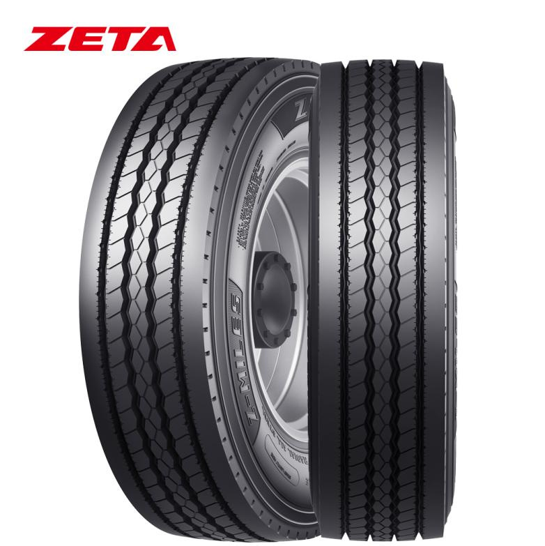
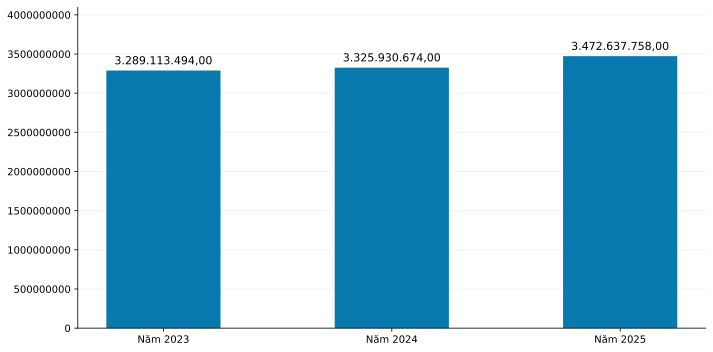
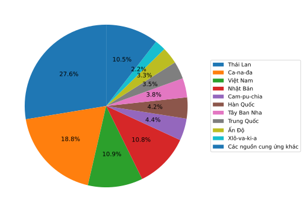
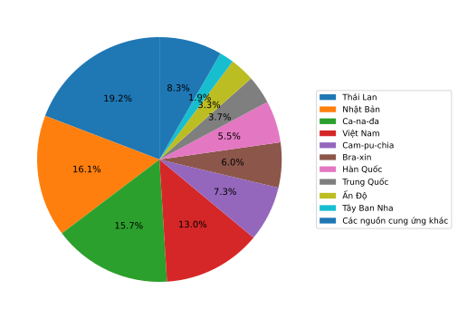
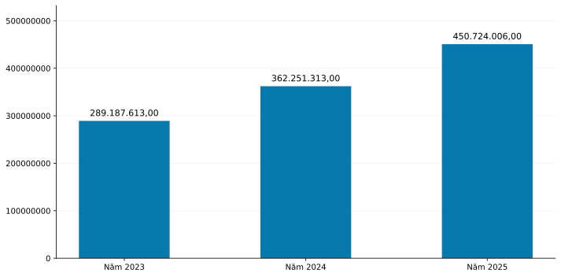
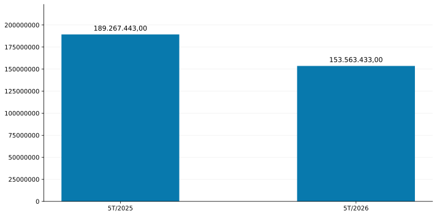

♦ Cục Phòng vệ thương mại công bố biên bản tham vấn công khai vụ việc điều tra chống lẩn tránh biện pháp phòng vệ thương mại đối với một số sản phẩm thép cán nóng

♦ Cảnh báo xuất khẩu mặt hàng lốp xe tải và xe khách vào thị trường Hoa Kỳ
Cục Phòng vệ thương mại công bố biên bản tham vấn công khai vụ việc điều tra chống lẩn tránh biện pháp phòng vệ thương mại đối với một số sản phẩm thép cán nóng
Ngày 03/7/2026, Cục Phòng vệ thương mại (Cơ quan điều tra) đã tổ chức phiên tham vấn công khai trong vụ việc điều tra áp dụng biện pháp chống lẩn tránh biện pháp phòng vệ thương mại đối với một số sản phẩm thép cán nóng có xuất xứ từ Cộng hòa nhân dân Trung Hoa (mã vụ việc AC03.AD20).
Phiên tham vấn được tổ chức theo quy định tại Điều 70 Luật Quản lý ngoại thương năm 2017 và Điều 14 Nghị định số 86/2025/NĐ-CP quy định chi tiết một số điều của Luật Quản lý ngoại thương về các biện pháp phòng vệ thương mại. Đây là một trong những bước quan trọng của quá trình điều tra, nhằm tạo điều kiện để các bên liên quan trình bày ý kiến, quan điểm và cung cấp các thông tin, chứng cứ phục vụ việc xem xét, đánh giá vụ việc.
Phiên tham vấn có sự tham dự của 32 đại diện các bên liên quan, bao gồm Cục Phòng vệ thương mại (Cơ quan điều tra), Hiệp hội Thép Việt Nam, Hiệp hội Doanh nghiệp Cơ khí Việt Nam, các doanh nghiệp sản xuất trong nước, các doanh nghiệp sản xuất, xuất khẩu nước ngoài, các doanh nghiệp nhập khẩu và đại diện theo ủy quyền của các bên liên quan trong vụ việc AD20.
Tại phiên tham vấn, Cơ quan điều tra đã lắng nghe ý kiến, quan điểm của các bên liên quan đối với những nội dung của vụ việc. Các thông tin, tài liệu và ý kiến do các bên cung cấp sẽ được Cơ quan điều tra tổng hợp, xem xét và đánh giá trong quá trình xây dựng kết luận điều tra cuối cùng, bảo đảm việc điều tra được thực hiện khách quan, công bằng, minh bạch, phù hợp với quy định của pháp luật Việt Nam và các cam kết của Tổ chức Thương mại thế giới (WTO).
Về diễn biến của vụ việc, ngày 27/10/2025, Bộ Công Thương đã ban hành Quyết định số 3176/QĐ-BCT về việc điều tra áp dụng biện pháp chống lẩn tránh biện pháp phòng vệ thương mại đối với một số sản phẩm thép cán nóng có xuất xứ từ Cộng hòa nhân dân Trung Hoa (mã vụ việc AC03.AD20). Tiếp đó, ngày 02/4/2026, Bộ Công Thương ban hành Quyết định số 612/QĐ-BCT áp dụng biện pháp chống lẩn tránh biện pháp phòng vệ thương mại tạm thời đối với sản phẩm thuộc phạm vi điều tra. Ngày 03/7/2026, Cơ quan điều tra đã tổ chức phiên tham vấn công khai theo hình thức kết hợp trực tiếp và trực tuyến với sự tham gia của các bên liên quan nhằm tạo điều kiện để các bên trình bày ý kiến và cung cấp các thông tin cần thiết phục vụ quá trình điều tra.
Trong thời gian tới, Cục Phòng vệ thương mại sẽ tiếp tục hoàn thiện kết luận điều tra cuối cùng của vụ việc. Trên cơ sở kết luận điều tra, Bộ Công Thương sẽ xem xét và ban hành quyết định chính thức đối với vụ việc theo quy định của pháp luật.
TIN TRONG NƯỚC
Hội nghị tập huấn “Nâng cao năng lực ứng phó phòng vệ thương mại và cảnh báo sớm” năm 2026 tại thành phố Đồng Nai
Ngày 10/7/2026, tại thành phố Đồng Nai, Cục Phòng vệ thương mại (Bộ Công Thương) phối hợp với Sở Công Thương thành phố Đồng Nai tổ chức Hội nghị tập huấn “Nâng cao năng lực ứng phó phòng vệ thương mại và cảnh báo sớm” năm 2026. Hội nghị có sự tham dự của lãnh đạo Cục Phòng vệ thương mại, lãnh đạo Sở Công Thương thành phố Đồng Nai cùng đại diện các cơ quan quản lý nhà nước, hiệp hội ngành hàng và đông đảo doanh nghiệp sản xuất, xuất khẩu trên địa bàn.
Phát biểu khai mạc Hội nghị, lãnh đạo Cục Phòng vệ thương mại cho biết, trong bối cảnh xu hướng bảo hộ thương mại tiếp tục gia tăng trên phạm vi toàn cầu, các biện pháp phòng vệ thương mại ngày càng được nhiều quốc gia sử dụng với tần suất và mức độ phức tạp cao hơn. Tính đến hết tháng 5/2026, hàng hóa xuất khẩu của Việt Nam đã phải đối mặt với 321 vụ việc điều tra phòng vệ thương mại, trong đó các vụ việc chống bán phá giá và tự vệ chiếm tỷ trọng lớn. Đáng chú ý, các vụ việc điều tra chống trợ cấp và chống lẩn tránh biện pháp phòng vệ thương mại đang có xu hướng gia tăng, đặt ra yêu cầu doanh nghiệp phải chủ động theo dõi, nhận diện sớm rủi ro và nâng cao năng lực ứng phó.
Tại Hội nghị, các chuyên gia của Cục Phòng vệ thương mại đã cập nhật bối cảnh và xu hướng điều tra phòng vệ thương mại trên thế giới; phân tích những nguy cơ đối với hàng hóa xuất khẩu của Việt Nam; giới thiệu cơ chế cảnh báo sớm và phương pháp khai thác dữ liệu để nhận diện nguy cơ bị điều tra. Hội nghị cũng chia sẻ kinh nghiệm từ các vụ việc chống bán phá giá, chống trợ cấp và chống lẩn tránh biện pháp phòng vệ thương mại điển hình, đồng thời hướng dẫn doanh nghiệp chuẩn bị hồ sơ, dữ liệu và tăng cường phối hợp với cơ quan quản lý nhà nước trong quá trình xử lý các vụ việc.
Bên cạnh đó, các đại biểu được giới thiệu hệ thống cảnh báo sớm về phòng vệ thương mại do Cục Phòng vệ thương mại xây dựng và vận hành. Thông qua hệ thống này, doanh nghiệp có thể theo dõi diễn biến xuất khẩu của từng mặt hàng, kịp thời nhận diện các dấu hiệu rủi ro và chủ động điều chỉnh hoạt động sản xuất, kinh doanh cũng như chiến lược thị trường trước khi các vụ việc điều tra được khởi xướng.
Hội nghị đã cung cấp nhiều thông tin cập nhật và thiết thực, góp phần nâng cao nhận thức, tăng cường năng lực ứng phó của các cơ quan quản lý, hiệp hội ngành hàng và cộng đồng doanh nghiệp trước các vụ việc phòng vệ thương mại, qua đó hỗ trợ doanh nghiệp chủ động phòng ngừa rủi ro, bảo vệ quyền và lợi ích hợp pháp, hướng tới phát triển xuất khẩu bền vững và nâng cao năng lực cạnh tranh của hàng hóa Việt Nam trên thị trường quốc tế.
TIN NƯỚC NGOÀI
Pa-ki-xtan chính thức áp dụng thuế chống bán phá giá đối với natri cacbonat khan nhập khẩu từ Thổ Nhĩ Kỳ và Kê-ni-a
Ủy ban Thuế quan Quốc gia Pa-ki-xtan (NTC) đã ban hành kết luận cuối cùng, quyết định chính thức áp dụng thuế chống bán phá giá trong thời hạn 05 năm đối với sản phẩm natri cacbonat khan (soda ash) có xuất xứ hoặc được nhập khẩu từ Thổ Nhĩ Kỳ và Kê-ni-a, kết luận rằng hàng hóa nhập khẩu từ hai quốc gia này đã bị bán phá giá đã gây thiệt hại đáng kể cho ngành sản xuất trong nước.
Sản phẩm thuộc phạm vi điều tra là natri cacbonat khan, được phân loại theo mã HS 2836.20.00. Đây là nguyên liệu đầu vào quan trọng được sử dụng trong nhiều ngành công nghiệp như sản xuất chất tẩy rửa, thủy tinh, hóa chất, giấy và luyện kim.
Theo thông báo của NTC, vụ việc được khởi xướng vào ngày 18/7/2025 trên cơ sở đơn yêu cầu của Lucky Core Industries Limited và Olympia Chemical Limited, hai doanh nghiệp đại diện cho ngành sản xuất natri cacbonat khan của Pa-ki-xtan.
Trước đó, vào tháng 01/2026, NTC đã áp dụng thuế chống bán phá giá tạm thời với mức thuế từ 3,49% đến 12,54% đối với sản phẩm thuộc phạm vi điều tra. Sau khi hoàn tất quá trình điều tra, NTC kết luận rằng sản phẩm natri cacbonat khan nhập khẩu từ Thổ Nhĩ Kỳ và Kê-ni-a đã được bán phá giá tại thị trường Pa-ki-xtan với mức giá thấp không công bằng, gây thiệt hại đáng kể cho ngành sản xuất trong nước.
Kết quả điều tra cho thấy lượng hàng nhập khẩu bị bán phá giá gia tăng đã gây ra thiệt hại đáng kể cho ngành sản xuất trong nước, thể hiện qua hiện tượng ép giá, sụt giảm doanh số bán hàng và thị phần, suy giảm năng suất sản xuất, đồng thời ảnh hưởng tiêu cực đến dòng tiền và khả năng sinh lời của doanh nghiệp sản xuất trong nước.
Trên cơ sở kết luận cuối cùng, NTC quyết định chính thức áp dụng thuế chống bán phá với các mức thuế khác nhau. Cụ thể, sản phẩm của một số nhà sản xuất, xuất khẩu của Thổ Nhĩ Kỳ chịu mức thuế 4,49% và 6,58%, trong khi các nhà sản xuất, xuất khẩu khác của Thổ Nhĩ Kỳ chịu mức thuế 6,58%. Đối với hàng hóa có xuất xứ từ Kê-ni-a, mức thuế chống bán phá giá được xác định là 13,54%.
Các mức thuế này có hiệu lực kể từ ngày 15/01/2026 và được áp dụng trong thời hạn 05 năm. Thuế chống bán phá giá sẽ được thu bổ sung ngoài các loại thuế và khoản thu khác theo quy định của pháp luật Pa-ki-xtan.
Tuy nhiên, NTC cho biết biện pháp này không áp dụng đối với sản phẩm natri cacbonat khan được sử dụng làm nguyên liệu đầu vào để sản xuất hàng hóa xuất khẩu hoặc phục vụ các dự án được tài trợ bằng nguồn viện trợ nước ngoài theo các chương trình miễn trừ hiện hành.
Tổng hợp tù brecorder.com
TIN NƯỚC NGOÀI
Hoa Kỳ công bố kết luận sơ bộ điều tra chống bán phá giá đối với nấm tươi nhập khẩu từ Ca-na-đa
Bộ Thương mại Hoa Kỳ (DOC) đã ban hành kết luận sơ bộ trong vụ điều tra chống bán phá giá đối với sản phẩm nấm tươi nhập khẩu từ Ca-na-đa. Kết quả điều tra sơ bộ cho thấy có căn cứ xác định hàng hóa thuộc phạm vi điều tra được bán phá giá tại thị trường Hoa Kỳ. Trên cơ sở đó, DOC đề xuất áp dụng thuế chống bán phá giá tạm thời đối với sản phẩm này.
Theo kết luận sơ bộ, mức thuế chống bán phá giá tạm thời áp dụng đối với hầu hết các doanh nghiệp xuất khẩu nấm tươi của Ca-na-đa là 8,26%. Đối với các doanh nghiệp được điều tra riêng, DOC xác định mức thuế là 8,71% đối với Champ's Fresh Farms Inc., 11,80% đối với Highline Produce Limited và 2,0% đối với Farmers' Fresh Mushrooms, Inc.
Hiệp hội Nấm Ca-na-đa cho rằng các mức thuế chống bán phá giá tạm thời chủ yếu phản ánh phương pháp tính toán theo quy định của pháp luật chống bán phá giá của Hoa Kỳ, chưa phản ánh đầy đủ thực tế giao dịch trên thị trường nấm Bắc Mỹ. Ông Ryan Koeslag, Tổng Giám đốc Hiệp hội, cho rằng các quy tắc kỹ thuật trong quá trình tính toán chống bán phá giá của Hoa Kỳ có thể dẫn đến kết luận về hành vi bán phá giá ngay cả khi giá bán thực tế trên thị trường không phản ánh điều đó. Theo ông Ryan Koeslag, nếu so sánh giá bán bình quân thực tế của nấm tại Hoa Kỳ với giá bán bình quân của nấm Ca-na-đa thì sẽ không có căn cứ để xác định hành vi bán phá giá.
Trước đó, vào tháng 5/2026, DOC đã ban hành kết luận sơ bộ trong vụ điều tra chống trợ cấp đối với nấm tươi nhập khẩu từ Ca-na-đa và áp dụng mức thuế chống trợ cấp tạm thời 2,84% Cơ quan điều tra cho rằng các doanh nghiệp sản xuất nấm của Ca-na-đa đã nhận được các khoản trợ cấp có thể bị đối kháng theo quy định. Tuy nhiên, Hiệp hội Nấm Ca-na-đa bác bỏ cáo buộc này và khẳng định các doanh nghiệp trong ngành không nhận được các khoản trợ cấp như kết luận của phía Hoa Kỳ.
Vụ việc chống bán phá giá và chống trợ cấp đối với nấm tươi nhập khẩu từ Ca-na-đa là các cuộc điều tra phòng vệ thương mại độc lập, không thuộc các biện pháp thuế quan khác mà Tổng thống Hoa Kỳ Donald Trump đang áp dụng đối với nhiều đối tác thương mại. Bên cạnh đó, Ca-na-đa hiện cũng đang chịu các biện pháp thuế quan theo từng ngành đối với các mặt hàng như thép, nhôm, ô tô và sản phẩm tủ, kệ.
Theo DOC, vụ việc được khởi xướng vào tháng 01/2026 trên cơ sở đơn yêu cầu của Liên minh Thương mại Công bằng ngành Nấm tươi Hoa Kỳ (Fresh Mushrooms Fair Trade Coalition). Trong đơn yêu cầu, nguyên đơn đề nghị áp dụng thuế chống bán phá giá đối với nấm tươi nhập khẩu từ Ca-na-đa với mức thuế có thể lên tới 44%.
Hiệp hội Nấm Ca-na-đa cho rằng mức thuế chống bán phá giá sơ bộ do DOC xác định thấp hơn đáng kể so với mức thuế mà nguyên đơn đề nghị, qua đó cho thấy các cáo buộc ban đầu về hành vi bán phá giá đã được điều chỉnh sau quá trình xem xét sơ bộ. Hiệp hội cũng khẳng định sẽ tiếp tục hợp tác đầy đủ với cơ quan điều tra và cung cấp các thông tin cần thiết nhằm bảo vệ quyền và lợi ích của ngành sản xuất nấm Ca-na-đa trong các giai đoạn tiếp theo của vụ việc.
Theo quy định của pháp luật Hoa Kỳ, kết luận sơ bộ chưa phải là quyết định cuối cùng. DOC sẽ tiếp tục xem xét ý kiến và thông tin do các bên liên quan cung cấp trước khi ban hành kết luận cuối cùng và quyết định việc áp dụng thuế chống bán phá giá chính thức.
Tổng hợp từ bnnbloomberg.ca
TIN NƯỚC NGOÀI
Hàn Quốc khởi xướng điều tra chống bán phá giá đối với thép lá mạ thiếc nhập khẩu từ Trung Quốc
Ủy ban Thương mại Hàn Quốc (KTC) đã quyết định khởi xướng điều tra chống bán phá giá đối với sản phẩm thép lá mạ thiếc (tinplate) có xuất xứ từ Trung Quốc. Sản phẩm thuộc phạm vi điều tra là một số loại thép lá cán nguội được mạ thiếc, crôm hoặc ôxít crôm, thuộc các mã HS 7210.11.0000, 7210.12.0000, 7210.50.0000, 7212.10.1000, 7212.10.2000 và 7212.50.9000.
Vụ việc được khởi xướng trên cơ sở đơn yêu cầu của hai doanh nghiệp sản xuất trong nước là TCC Steel và Shinhwa Dynamics, được nộp ngày 19/6/2026.
Theo KTC, giai đoạn điều tra hành vi bán phá giá được xác định từ ngày 01/01/2025 đến ngày 31/12/2025, trong khi giai đoạn xem xét thiệt hại đối với ngành sản xuất trong nước kéo dài từ năm 2022 đến năm 2025.
KTC yêu cầu các bên liên quan đăng ký tham gia vụ việc trong thời hạn 03 tuần kể từ ngày thông báo khởi xướng. Theo kế hoạch, cơ quan điều tra sẽ ban hành kết luận sơ bộ trong thời hạn 03 tháng, kể từ ngày khởi xướng điều tra. Trong trường hợp cần thiết, thời hạn điều tra sơ bộ có thể được gia hạn thêm 02 tháng theo quy định.
Tổng hợp từ yieh.com
TIN NƯỚC NGOÀI
Hiệp định Thương mại Ấn Độ - Vương quốc Anh chính thức có hiệu lực, hàng nghìn mặt hàng được giảm thuế
Ngày 15/7/2026, Hiệp định Thương mại và Kinh tế Toàn diện giữa Ấn Độ và Vương quốc Anh chính thức có hiệu lực, đánh dấu bước phát triển mới trong quan hệ thương mại song phương. Hiệp định quy định cắt giảm thuế quan đối với hàng nghìn dòng thuế, đồng thời mở rộng khả năng tiếp cận thị trường đối với lĩnh vực dịch vụ và hoạt động di chuyển của doanh nghiệp, người lao động có trình độ chuyên môn của hai nước.
Phát biểu về hiệp định, Thủ tướng Ấn Độ Narendra Modi nhận định Hiệp định thương mại và Kinh tế Toàn diện cùng với Hiệp định về an sinh xã hội đi kèm sẽ giúp quan hệ kinh tế giữa hai nước ngày càng gắn kết hơn, đồng thời thúc đẩy hợp tác trong lĩnh công nghệ, đổi mới sáng tạo và dịch vụ chuyên môn.
Theo số liệu của Bộ Thương mại Ấn Độ, trong năm 2025/2026 kim ngạch xuất khẩu hàng hóa của Ấn Độ sang Vương quốc Anh đạt 13,44 tỷ USD, trong khi nhập khẩu đạt 11,68 tỷ USD. Năm 2024, kim ngạch thương mại dịch vụ song phương đạt 35,44 tỷ USD, trong đó Ấn Độ xuất siêu dịch vụ gần 7,9 tỷ USD. Những số liệu này cho thấy quan hệ thương mại giữa hai nước đã có nền tảng vững chắc và được kỳ vọng sẽ tiếp tục tăng trưởng sau khi hiệp định chính thức có hiệu lực.
Theo cam kết trong hiệp định, Vương quốc Anh sẽ xóa bỏ ngay thuế nhập khẩu đối với 96,8% số dòng thuế, tương ứng 97,7% tổng kim ngạch thương mại giữa hai nước tính theo giá trị. Về phía Ấn Độ sẽ xóa bỏ ngay thuế nhập khẩu đối với 64,1% số dòng thuế, đồng thời cắt giảm theo lộ trình đối với 21% số dòng thuế, trong khi vẫn bảo lưu một số mặt hàng.
Việc thực thi các cam kết thuế quan được kỳ vọng sẽ nâng cao năng lực cạnh tranh của hàng hóa xuất khẩu Ấn Độ tại thị trường Vương quốc Anh từ 4% đến 20%, như thủy sản, dệt may, da thuộc, giày dép, đá quý và trang sức, sẽ là những lĩnh vực hưởng lợi đáng kể sau khi thuế quan được cắt giảm hoặc xóa bỏ.
Bên cạnh đó, ngành cơ khí - chế tạo của Ấn Độ cũng được dự báo sẽ hưởng lợi từ hiệp định. Hiện Vương quốc Anh là một trong năm thị trường xuất khẩu sản phẩm cơ khí lớn nhất của Ấn Độ, với kim ngạch đạt 4,7 tỷ USD trong năm 2025. Trong hai tháng đầu năm 2026, kim ngạch xuất khẩu nhóm hàng này sang Anh đạt 972,5 triệu USD, tăng 34,4% so với cùng kỳ năm trước.
Theo ông Pankaj Chadha Chủ tịch Hội đồng Xúc tiến Xuất khẩu Kỹ thuật Ấn Độ, cho rằng hiệp định sẽ cải thiện khả năng tiếp cận thị trường đối với các mặt hàng như thiết bị điện, linh kiện ô tô và thép, qua đó giúp kim ngạch xuất khẩu sản phẩm cơ khí sang Vương quốc Anh vượt 7,5 tỷ USD vào năm 2029/2030.
Đối với Vương quốc Anh, hiệp định mở ra cơ hội mở rộng tiếp cận thị trường Ấn Độ thông qua lộ trình cắt giảm thuế quan và áp dụng hạn ngạch thuế quan đối với một số mặt hàng như ô tô và bạc. Theo đó, xe ô tô nguyên chiếc nhập khẩu từ Vương quốc Anh sẽ được hưởng hạn ngạch thuế quan, cho phép 37.000 xe mỗi năm được nhập khẩu với mức thuế ưu đãi. Ngoài ra, doanh nghiệp Anh cũng sẽ có thêm cơ hội tiếp cận các lĩnh vực mua sắm công, dịch vụ tài chính, giáo dục, bảo hiểm và dịch vụ chuyên môn tại thị trường Ấn Độ.
Trong lĩnh vực dịch vụ, hiệp định mở rộng tiếp cận thị trường đối với 137 phân ngành dịch vụ, bao gồm công nghệ thông tin, dịch vụ kinh doanh, viễn thông, tài chính và giáo dục. Đồng thời, hiệp định cũng tạo điều kiện thuận lợi cho việc nhập cảnh và lưu trú tạm thời của khách công tác, nhân sự luân chuyển nội bộ doanh nghiệp, nhà đầu tư, nhà cung cấp dịch vụ và các chuyên gia độc lập của hai nước.
Song song với các cam kết về thương mại, cam kết về đóng góp an sinh xã hội quy định các chuyên gia và doanh nghiệp Ấn Độ đủ điều kiện sẽ được miễn đóng bảo hiểm quốc gia của Vương quốc Anh trong thời gian làm việc tối đa 05 năm, dự kiến mang lại lợi ích cho khoảng 75.000 lao động và 900 doanh nghiệp.
Ngoài ra, hiệp định cũng mở cửa thị trường mua sắm công của Vương quốc Anh, với quy mô ước tính khoảng 90 tỷ bảng Anh (tương đương khoảng 121 tỷ USD) cho các nhà cung cấp của Ấn Độ. Đổi lại, Ấn Độ cũng dành cho doanh nghiệp Anh cơ hội tiếp cận thị trường mua sắm công trị giá khoảng 114 tỷ USD.
Tổng hợp từ reuters.com
TIN NƯỚC NGOÀI
Phi-líp-pin áp dụng biện pháp tự vệ đối với xi măng nhập khẩu từ Trung Quốc và In-đô-nê-xi-a
Từ ngày 06/7/2026, Cục Hải quan Phi-líp-pin (Bureau of Customs - BOC) đã chính thức áp dụng biện pháp tự vệ đối với sản phẩm xi măng nhập khẩu từ Trung Quốc và In-đô-nê-xi-a sau khi lượng nhập khẩu từ hai quốc gia này tăng lên vượt ngưỡng được miễn trừ theo quy định.
Việc áp dụng biện pháp được thực hiện theo Thông tư Hải quan số 164-2026, căn cứ Lệnh Hành chính số 26-03 của Bộ Thương mại và Công nghiệp Phi-líp-pin (DTI). Theo quy định, biện pháp có hiệu lực sau khi BOC ban hành thông báo triển khai.
Trước đó, DTI đã ban hành Lệnh Hành chính số 25-15, áp dụng biện pháp tự vệ chính thức trong thời hạn 3 năm đối với sản phẩm xi măng Poóc-lăng thông thường loại I (mã AHTN 2022: 2523.29.90) và xi măng hỗn hợp (mã AHTN 2022: 2523.90.00). Theo quy định này, xi măng có xuất xứ từ các nước đang phát triển được miễn áp dụng biện pháp nếu thị phần nhập khẩu của từng nước chiếm dưới 3% tổng lượng xi măng nhập khẩu.
Tuy nhiên, theo Lệnh Hành chính số 26-03, thị phần xi măng nhập khẩu từ Trung Quốc và In-đô-nê-xi-a trong năm 2025 và quý I/2026 đã vượt ngưỡng 3% theo quy định, do đó hai quốc gia này không còn thuộc diện được miễn áp dụng biện pháp tự vệ.
Theo quy định mới, trong năm đầu tiên áp dụng biện pháp, xi măng nhập khẩu từ Trung Quốc và In-đô-nê-xi-a sẽ chịu thuế tự vệ ở mức 14 peso/bao 40 kg, tương đương 349 peso/tấn.
BOC cho biết đã bắt đầu triển khai thu thuế tự vệ đối với mặt hàng xi măng theo Lệnh Hành chính số 25-15 từ tháng 3/2026.
Theo Bộ Thương mại và Công nghiệp Phi-líp-pin, việc áp dụng biện pháp tự vệ nhằm tạo lập môi trường cạnh tranh bình đẳng giữa ngành sản xuất xi măng trong nước và hàng nhập khẩu, đồng thời không được kỳ vọng sẽ làm tăng giá bán đối với người tiêu dùng do biện pháp chỉ áp dụng đối với sản phẩm nhập khẩu.
Bộ này cũng cho biết mức thuế tự vệ do Ủy ban Thuế quan Phi-líp-pin (Tariff Commission - TC) đề xuất chỉ tương đương khoảng 3-4% giá bán lẻ hiện hành của sản phẩm xi măng.
Trước khi ban hành biện pháp tự vệ chính thức, DTI đã áp dụng biện pháp tự vệ tạm thời đối với xi măng nhập khẩu từ nhiều quốc gia sau khi kết quả điều tra sơ bộ cho thấy lượng nhập khẩu gia tăng là nguyên nhân gây thiệt hại nghiêm trọng cho ngành sản xuất xi măng trong nước.
Theo đó, trong năm 2025, BOC đã triển khai biện pháp tự vệ tạm thời dưới hình thức ký quỹ bằng tiền mặt, với mức 400 peso/tấn, tương đương 16 peso/bao 40 kg, đối với xi măng Poóc-lăng thông thường loại I và xi măng hỗn hợp theo Lệnh Hành chính số 25-01 của DTI.
Việc áp dụng các biện pháp tự vệ nêu trên được thực hiện theo quy định của Đạo luật số 8800 về Biện pháp tự vệ của Phi-líp-pin. Đạo luật này cho phép áp dụng biện pháp tự vệ trong các trường hợp khẩn cấp khi việc chậm trễ có thể gây ra thiệt hại khó khắc phục và kết quả điều tra sơ bộ cho thấy lượng hàng nhập khẩu gia tăng là nguyên nhân chủ yếu gây thiệt hại nghiêm trọng cho ngành sản xuất trong nước.
Tổng hợp từ portcalls.com
TIN NƯỚC NGOÀI
Hoa Kỳ ban hành kết luận cuối cùng rà soát cuối kỳ thuế chống bán phá giá đối với sản phẩm ống thép đúc nhập khẩu từ bốn quốc gia
Bộ Thương mại Hoa Kỳ (DOC) vừa công bố kết luận cuối cùng của cuộc rà soát cuối kỳ lần thứ nhất theo thủ tục rút gọn đối với lệnh áp thuế chống bán phá giá đang áp dụng đối với sản phẩm ống thép đúc bằng thép carbon và thép hợp kim có xuất xứ từ Cộng hòa Séc, Hàn Quốc, Nga và U-crai-na. Kết luận cuối cùng của cuộc rà soát có hiệu lực từ ngày 06/7/2026.
DOC đã khởi xướng cuộc rà soát cuối kỳ này vào ngày 02/3/2026.
Trong quá trình rà soát, Vallourec Star LP là nhà sản xuất trong nước của Hoa Kỳ đã tham gia với tư cách là bên liên quan thông qua việc nộp thông báo tham gia vụ việc. Tuy nhiên, các nhà xuất khẩu và nhà sản xuất nước ngoài không nộp bản trả lời đầy đủ hoặc tài liệu bảo vệ quyền lợi của mình. Do đó, DOC đã tiến hành rà soát theo thủ tục rút gọn trong thời hạn 120 ngày theo quy định của pháp luật Hoa Kỳ.
Sản phẩm thuộc phạm vi rà soát là ống thép đúc không gỉ và thép hợp kim có xuất xứ từ Cộng hòa Séc, Hàn Quốc, Nga và U-crai-na.
Kết quả rà soát cho thấy, việc chấm dứt các lệnh áp thuế chống bán phá giá hiện hành nhiều khả năng sẽ dẫn đến việc tiếp diễn hoặc tái diễn hành vi bán phá giá đối với các sản phẩm thuộc phạm vi điều tra.
Theo kết luận cuối cùng, mức biên độ bán phá giá bình quân gia quyền tiếp tục được duy trì như sau: Cộng hòa Séc: 51,70%; Hàn Quốc: 4,48%; Nga: 209,72%; U-crai-na: 23,75%.
Như vậy, Hoa Kỳ sẽ tiếp tục duy trì lệnh áp thuế chống bán phá giá đối với sản phẩm ống thép đúc nhập khẩu từ bốn quốc gia nêu trên theo các mức thuế đã được xác định trong kết luận rà soát cuối kỳ.
Tổng hợp từ steelradar
TIN NƯỚC NGOÀI
Ấn Độ gia hạn thuế chống bán phá giá đối với một số sản phẩm ống thép đúc nhập khẩu từ Trung Quốc đến tháng 01/2027
Chính phủ Ấn Độ đã quyết định gia hạn áp dụng thuế chống bán phá giá đối với một số sản phẩm ống thép đúc, ống thép và thép hình rỗng bằng thép carbon hoặc thép hợp kim có xuất xứ từ Trung Quốc đến hết ngày 27/01/2027 nhằm bảo vệ ngành sản xuất trong nước trước tình trạng hàng nhập khẩu giá rẻ.
Theo thông báo của Bộ Tài chính Ấn Độ, biện pháp chống bán phá giá đối với các sản phẩm nêu trên được áp dụng lần đầu từ ngày 28/10/2021 với thời hạn 5 năm.
Ủy ban Trung ương về Thuế gián tiếp và Hải quan Ấn Độ (CBIC) cho biết việc áp dụng thuế chống bán phá giá sẽ được gia hạn đến hết ngày 27/01/2027, trừ trường hợp biện pháp bị bãi bỏ, thay thế hoặc sửa đổi trước thời điểm này.
Mức thuế chống bán phá giá hiện hành tiếp tục được duy trì trong khoảng từ 961,33 USD/tấn đến 1.610,67 USD/tấn, tùy theo nhà sản xuất, xuất khẩu.
Bên cạnh đó, CBIC cũng thông báo tiếp tục duy trì thuế chống bán phá giá trong thời hạn 5 năm đối với sản phẩm Normal Butanol (N-Butyl Alcohol) nhập khẩu từ Ma-lai-xi-a, Nam Phi và Hoa Kỳ. Đây là loại hóa chất được sử dụng phổ biến trong các ngành công nghiệp như hóa chất, sơn, chất kết dính và vật liệu phủ.
Theo Chính phủ Ấn Độ, các biện pháp chống bán phá giá được áp dụng nhằm bảo đảm môi trường cạnh tranh công bằng và tạo điều kiện cạnh tranh bình đẳng cho ngành sản xuất trong nước. Biện pháp này không nhằm hạn chế hoạt động nhập khẩu hoặc làm gia tăng chi phí sản phẩm một cách không hợp lý.
Tổng hợp từ dailypioneer
THÔNG TIN XUẤT NHẬP KHẨU
Cảnh báo xuất khẩu mặt hàng lốp xe tải và xe khách vào thị trường Hoa Kỳ
Mô tả mặt hàng lốp xe tải và xe khách
Lốp xe tải và xe khách (Truck and bus tires) là nhóm sản phẩm cao su kỹ thuật chuyên dụng được thiết kế để sử dụng trên các phương tiện vận tải hàng hóa và vận tải hành khách có tải trọng lớn như xe tải nhẹ, xe tải trung, xe tải hạng nặng, xe đầu kéo, xe container, xe buýt, xe khách liên tỉnh và các phương tiện thương mại khác. Đây là một trong những bộ phận quan trọng nhất của phương tiện, có chức năng chịu toàn bộ tải trọng của xe và hàng hóa, truyền lực kéo, lực phanh, lực lái xuống mặt đường, đồng thời hấp thụ rung động và giảm chấn trong quá trình vận hành. Chất lượng của lốp xe ảnh hưởng trực tiếp đến khả năng vận hành, độ an toàn, hiệu quả tiêu hao nhiên liệu, tuổi thọ của phương tiện cũng như chi phí khai thác và bảo dưỡng của doanh nghiệp vận tải.
Lốp xe tải và xe khách được cấu tạo từ nhiều lớp vật liệu khác nhau, bao gồm cao su thiên nhiên, cao su tổng hợp, muội than hoặc silica, dây thép cường lực, sợi polyester, sợi nylon, sợi rayon, hóa chất lưu hóa và nhiều phụ gia kỹ thuật khác. Một chiếc lốp hoàn chỉnh thường gồm các bộ phận chính như lớp mặt lốp, vai lốp, hông lốp, lớp đai thép, lớp bố thân lốp, tanh lốp và lớp lót kín khí đối với lốp không săm. Mỗi bộ phận đảm nhiệm một chức năng riêng nhằm bảo đảm khả năng chịu tải lớn, chống mài mòn, chống cắt xé, chịu nhiệt và duy trì độ bền trong điều kiện vận hành liên tục trên quãng đường dài.
Trên thị trường hiện nay, lốp xe tải và xe khách chủ yếu được phân thành hai nhóm là lốp bố chéo và lốp bố tỏa tròn hay lốp radial. Trong đó, lốp radial sử dụng các lớp bố được bố trí vuông góc với hướng chuyển động kết hợp với lớp đai thép gia cường, giúp giảm lực cản lăn, tăng tuổi thọ, cải thiện khả năng tiết kiệm nhiên liệu, nâng cao độ bám đường và khả năng chịu tải. Nhờ những ưu điểm vượt trội này, lốp radial hiện chiếm tỷ trọng áp đảo trên thị trường toàn cầu và dần thay thế lốp bố chéo trong hầu hết các phân khúc xe tải và xe khách thương mại.
Lốp xe tải và xe khách được sản xuất với nhiều kích cỡ, chỉ số tải trọng, chỉ số tốc độ và kiểu gai khác nhau để đáp ứng yêu cầu của từng loại phương tiện và điều kiện khai thác. Các loại gai lốp được thiết kế chuyên biệt cho từng vị trí lắp đặt trên xe như lốp trục lái, lốp trục kéo, lốp trục rơ-moóc hoặc lốp đa dụng. Ngoài ra, còn có các dòng lốp chuyên dùng cho đường cao tốc, đường hỗn hợp, công trường, khai thác mỏ, vận tải đường dài hoặc vận tải đô thị. Sự khác biệt về thiết kế hoa lốp, chiều sâu gai, hợp chất cao su và cấu trúc bên trong giúp tối ưu hóa khả năng bám đường, chống mài mòn không đều, giảm sinh nhiệt và nâng cao tuổi thọ sản phẩm trong từng điều kiện sử dụng cụ thể.
Một đặc điểm quan trọng của lốp xe tải và xe khách là khả năng tái sử dụng thông qua hoạt động đắp lại mặt lốp. Do phần thân lốp được thiết kế với độ bền rất cao, sau khi lớp gai bị mòn, lốp vẫn có thể được tái chế bằng cách thay mới phần mặt lốp nhiều lần nếu kết cấu thân lốp còn đạt tiêu chuẩn kỹ thuật. Công nghệ đắp lốp giúp kéo dài vòng đời sản phẩm, giảm đáng kể chi phí vận hành cho doanh nghiệp vận tải và góp phần tiết kiệm tài nguyên, giảm lượng chất thải cao su ra môi trường. Đây là một trong những đặc điểm khác biệt của lốp xe tải và xe khách so với lốp xe du lịch.
Về tiêu chuẩn chất lượng, lốp xe tải và xe khách phải đáp ứng nhiều yêu cầu kỹ thuật nghiêm ngặt liên quan đến khả năng chịu tải, độ bền, khả năng chịu áp suất, khả năng chống nổ, độ bám đường, độ ổn định khi vận hành ở tốc độ cao và khả năng tản nhiệt. Sản phẩm thường được sản xuất theo các tiêu chuẩn quốc tế như ECE (Châu Âu), DOT (Hoa Kỳ), ISO, JIS (Nhật Bản), GCC (các nước vùng Vịnh) hoặc các tiêu chuẩn kỹ thuật của từng quốc gia nhập khẩu. Bên cạnh đó, nhiều nhà sản xuất còn áp dụng các hệ thống quản lý chất lượng như IATF 16949, ISO 9001 và ISO 14001 nhằm bảo đảm chất lượng sản phẩm, nâng cao hiệu quả sản xuất và đáp ứng yêu cầu của các hãng lắp ráp ô tô cũng như thị trường xuất khẩu.
Trong những năm gần đây, xu hướng phát triển lốp xe tải và xe khách tập trung vào việc nâng cao hiệu suất nhiên liệu, giảm phát thải khí nhà kính và kéo dài tuổi thọ sản phẩm. Các nhà sản xuất liên tục nghiên cứu các hợp chất cao su mới có hàm lượng silica cao, áp dụng công nghệ mô phỏng thiết kế gai lốp bằng trí tuệ nhân tạo (AI), tối ưu hóa cấu trúc thân lốp và sử dụng vật liệu thân thiện với môi trường nhằm giảm lực cản lăn, cải thiện khả năng bám đường trong điều kiện mưa ướt, giảm tiếng ồn và tăng khả năng tái chế sau khi hết vòng đời sử dụng. Đồng thời, các dòng lốp thông minh (smart tire) tích hợp cảm biến theo dõi áp suất, nhiệt độ và mức độ mài mòn cũng đang từng bước được thương mại hóa, góp phần nâng cao hiệu quả quản lý đội xe và bảo đảm an toàn trong vận tải thương mại.
Nhìn chung, lốp xe tải và xe khách là sản phẩm công nghiệp có hàm lượng công nghệ và giá trị gia tăng cao, đóng vai trò quan trọng trong chuỗi cung ứng ngành ô tô và logistics toàn cầu. Nhu cầu đối với mặt hàng này gắn chặt với sự phát triển của hoạt động vận tải hàng hóa, vận tải hành khách, đầu tư hạ tầng giao thông và thương mại quốc tế. Đây cũng là nhóm sản phẩm thường xuyên được giao dịch với khối lượng lớn trên thị trường thế giới và là đối tượng của nhiều cuộc điều tra phòng vệ thương mại như chống bán phá giá, chống trợ cấp và chống lẩn tránh thuế tại các thị trường nhập khẩu lớn, phản ánh mức độ cạnh tranh ngày càng gay gắt trong ngành công nghiệp sản xuất lốp xe toàn cầu.
Quy trình sản xuất lốp xe tải và xe khách
Quy trình sản xuất lốp xe tải và xe khách là một quy trình công nghệ phức tạp, đòi hỏi sự kết hợp giữa kỹ thuật hóa học, cơ khí chính xác và công nghệ tự động hóa nhằm tạo ra sản phẩm có khả năng chịu tải lớn, độ bền cao và đáp ứng các tiêu chuẩn an toàn nghiêm ngặt của ngành công nghiệp ô tô. Nguyên liệu đầu vào chủ yếu bao gồm cao su thiên nhiên, cao su tổng hợp, muội than (carbon black), silica, dầu hóa dẻo, lưu huỳnh, các chất xúc tiến lưu hóa, chất chống oxy hóa, dây thép cường lực, sợi polyester, sợi nylon, sợi rayon và nhiều loại phụ gia chuyên dụng khác. Trước khi đưa vào sản xuất, tất cả nguyên liệu đều được kiểm tra chất lượng về độ tinh khiết, độ bền kéo, kích thước và các chỉ tiêu cơ lý nhằm bảo đảm đáp ứng yêu cầu kỹ thuật của từng loại lốp.
Công đoạn đầu tiên là phối trộn hợp chất cao su, trong đó cao su thiên nhiên và cao su tổng hợp được đưa vào máy trộn kín cùng với muội than hoặc silica, dầu công nghệ và các loại hóa chất phụ gia theo công thức được nghiên cứu riêng cho từng bộ phận của lốp. Quá trình này diễn ra trong điều kiện nhiệt độ và thời gian được kiểm soát chặt chẽ nhằm tạo ra các hợp chất cao su có tính năng khác nhau như khả năng chống mài mòn, chịu nhiệt, chống lão hóa, tăng độ bám đường hoặc tăng khả năng chịu tải. Sau khi phối trộn, hỗn hợp cao su được cán thành tấm hoặc tạo thành dải để chuyển sang các công đoạn tiếp theo.
Tiếp theo là công đoạn chuẩn bị các bán thành phẩm. Cao su được ép đùn để tạo thành mặt lốp, hông lốp, lớp lót kín khí và các chi tiết cao su khác theo đúng kích thước thiết kế. Song song với đó, dây thép được bọc cao su để sản xuất lớp đai thép, tanh lốp và các lớp gia cường chịu lực. Các lớp bố thân lốp bằng sợi polyester, nylon hoặc rayon cũng được phủ cao su thông qua công nghệ cán tráng, giúp tăng khả năng liên kết giữa cao su và vật liệu gia cường. Đây là công đoạn có ý nghĩa quyết định đến độ bền kết cấu và khả năng chịu tải của lốp xe.
Sau khi hoàn thành các bán thành phẩm, các bộ phận được đưa đến công đoạn tạo hình lốp. Tại đây, máy tạo hình tự động sẽ lần lượt lắp ráp các lớp vật liệu theo trình tự kỹ thuật, bao gồm lớp lót kín khí, các lớp bố thân lốp, tanh lốp, lớp đai thép, lớp bảo vệ và cuối cùng là mặt lốp cùng hai bên hông lốp. Toàn bộ quá trình được điều khiển bằng hệ thống tự động nhằm bảo đảm độ chính xác về kích thước, vị trí lắp ghép và độ đồng đều của sản phẩm. Sau khi hoàn tất, sản phẩm ở trạng thái này được gọi là "lốp sống", chưa có độ bền cơ học hoàn chỉnh và cần trải qua quá trình lưu hóa.
Lưu hóa là công đoạn quan trọng nhất trong quy trình sản xuất lốp xe tải và xe khách. Lốp sống được đưa vào khuôn ép và gia nhiệt ở nhiệt độ khoảng 160–180°C dưới áp suất cao trong thời gian được tính toán phù hợp với từng chủng loại sản phẩm. Trong quá trình này, lưu huỳnh tạo ra các liên kết ngang giữa các phân tử cao su, giúp vật liệu chuyển từ trạng thái mềm dẻo sang trạng thái đàn hồi và bền vững. Đồng thời, hoa lốp, các ký hiệu kỹ thuật, kích cỡ và thông tin nhận diện cũng được định hình trên bề mặt lốp. Công đoạn lưu hóa quyết định phần lớn các đặc tính kỹ thuật của sản phẩm như độ cứng, khả năng chịu tải, khả năng chống mài mòn, chịu nhiệt và tuổi thọ sử dụng.
Sau lưu hóa, lốp được chuyển sang công đoạn kiểm tra chất lượng và hoàn thiện sản phẩm. Các nhà sản xuất áp dụng nhiều phương pháp kiểm tra hiện đại như kiểm tra kích thước hình học, cân bằng động, độ đồng đều, kiểm tra bằng tia X để phát hiện khuyết tật bên trong, kiểm tra độ kín khí, thử nghiệm chịu tải, thử nghiệm tốc độ cao, thử nghiệm độ bền mỏi và khả năng chống va đập. Nhiều doanh nghiệp còn sử dụng hệ thống kiểm tra tự động kết hợp cảm biến và trí tuệ nhân tạo (AI) để phát hiện các lỗi rất nhỏ mà mắt thường khó nhận biết. Chỉ những sản phẩm đáp ứng đầy đủ các tiêu chuẩn kỹ thuật và an toàn mới được cấp chứng nhận chất lượng, dán nhãn và đưa vào tiêu thụ.
Cuối cùng, lốp thành phẩm được làm sạch, đánh dấu mã số truy xuất nguồn gốc, đóng gói và bảo quản trong kho theo các điều kiện tiêu chuẩn nhằm tránh tác động của nhiệt độ, ánh sáng và độ ẩm trước khi vận chuyển đến các nhà phân phối hoặc khách hàng. Đối với lốp xuất khẩu, sản phẩm còn phải đáp ứng các yêu cầu kỹ thuật, môi trường và ghi nhãn của từng thị trường nhập khẩu như tiêu chuẩn DOT của Hoa Kỳ, ECE của Liên minh châu Âu, JIS của Nhật Bản hoặc các quy định kỹ thuật khác.
Hiện nay, cùng với xu hướng chuyển đổi số và phát triển sản xuất thông minh, nhiều nhà máy sản xuất lốp xe tải và xe khách đã ứng dụng công nghệ tự động hóa, robot công nghiệp, hệ thống quản lý sản xuất (MES), dữ liệu lớn (Big Data) và trí tuệ nhân tạo để tối ưu hóa quy trình sản xuất, nâng cao năng suất, giảm tiêu hao nguyên liệu và năng lượng, đồng thời kiểm soát chất lượng theo thời gian thực. Bên cạnh đó, các doanh nghiệp ngày càng chú trọng sử dụng vật liệu thân thiện với môi trường, tăng tỷ lệ nguyên liệu tái chế, giảm phát thải carbon và phát triển các dòng lốp có lực cản lăn thấp, tuổi thọ cao và khả năng tái sử dụng thông qua công nghệ đắp lốp, phù hợp với xu hướng phát triển bền vững của ngành công nghiệp ô tô và vận tải trên toàn cầu.
Thị trường lốp xe tải và xe khách của Hoa Kỳ và xu hướng
Hoa Kỳ là một trong những thị trường tiêu thụ lốp xe tải và xe khách lớn nhất thế giới nhờ sở hữu hệ thống vận tải đường bộ phát triển, mạng lưới logistics rộng khắp và quy mô đội xe thương mại thuộc nhóm lớn nhất toàn cầu. Hoạt động vận chuyển hàng hóa bằng đường bộ chiếm tỷ trọng chủ đạo trong hệ thống logistics của Hoa Kỳ, cùng với sự phát triển mạnh của thương mại điện tử, xây dựng, công nghiệp chế tạo và vận tải hành khách liên bang đã tạo ra nhu cầu ổn định đối với lốp xe tải và xe khách. Thị trường Hoa Kỳ bao gồm hai phân khúc chính là lốp lắp ráp theo xe mới và lốp thay thế, trong đó phân khúc thay thế chiếm tỷ trọng lớn do xe tải và xe khách thường hoạt động với cường độ cao, quãng đường vận hành dài và phải thay lốp nhiều lần trong vòng đời khai thác. Theo dự báo của Hiệp hội Các nhà sản xuất lốp xe Hoa Kỳ (USTMA), nhu cầu lốp thay thế cho xe tải tiếp tục duy trì xu hướng tăng trong những năm gần đây, phản ánh hoạt động vận tải hàng hóa và nhu cầu bảo dưỡng đội xe vẫn ở mức cao.
Thị trường Hoa Kỳ có mức độ cạnh tranh rất cao với sự hiện diện của nhiều tập đoàn sản xuất lốp hàng đầu thế giới như Bridgestone, Michelin, Goodyear, Continental, Yokohama, Hankook, Kumho và Toyo. Bên cạnh nguồn cung sản xuất trong nước, Hoa Kỳ còn nhập khẩu lượng lớn lốp xe tải và xe khách từ các quốc gia như Thái Lan, Việt Nam, Nhật Bản, Hàn Quốc, Indonesia và một số nền kinh tế khác ở châu Á nhằm đáp ứng nhu cầu của thị trường. Trong những năm gần đây, tỷ trọng lốp nhập khẩu có xu hướng gia tăng, đặc biệt ở phân khúc sản phẩm trung cấp và giá cạnh tranh, khiến áp lực cạnh tranh trên thị trường ngày càng lớn.
Xu hướng nổi bật của thị trường Hoa Kỳ là sự chuyển dịch mạnh sang các dòng lốp radial không săm có tuổi thọ cao, khả năng chịu tải lớn, lực cản lăn thấp và tiết kiệm nhiên liệu. Các doanh nghiệp vận tải ngày càng ưu tiên sử dụng các sản phẩm có tổng chi phí sở hữu thấp, nghĩa là không chỉ quan tâm đến giá mua ban đầu mà còn chú trọng tuổi thọ, khả năng đắp lại mặt lốp, mức tiêu hao nhiên liệu và chi phí bảo dưỡng trong suốt vòng đời sử dụng. Do đó, các dòng lốp có khả năng vận hành quãng đường dài, chống mài mòn tốt và hỗ trợ giảm phát thải khí nhà kính đang trở thành xu hướng chủ đạo trên thị trường.
Bên cạnh đó, chuyển đổi số trong ngành vận tải cũng thúc đẩy nhu cầu đối với các sản phẩm lốp thông minh tích hợp cảm biến theo dõi áp suất, nhiệt độ, tải trọng và mức độ mài mòn theo thời gian thực. Những giải pháp này giúp doanh nghiệp quản lý đội xe hiệu quả hơn, giảm thời gian dừng xe, hạn chế sự cố và tối ưu hóa chi phí vận hành. Đồng thời, các nhà sản xuất lốp lớn cũng tập trung phát triển các hợp chất cao su mới, sử dụng vật liệu bền vững và nâng cao khả năng tái chế nhằm đáp ứng các mục tiêu giảm phát thải carbon và yêu cầu phát triển bền vững trong ngành vận tải.
Tuy nhiên, thị trường Hoa Kỳ cũng chịu tác động đáng kể từ biến động kinh tế và chính sách thương mại. Trong giai đoạn 2023-2025, nhu cầu lốp lắp ráp theo xe mới có xu hướng chậm lại do doanh số xe thương mại giảm, trong khi phân khúc lốp thay thế vẫn duy trì tăng trưởng nhờ hoạt động vận tải hàng hóa ổn định. Đồng thời, việc gia tăng nhập khẩu từ châu Á và các chính sách thuế quan đối với một số nguồn cung đã làm thay đổi cơ cấu cạnh tranh và có thể tạo áp lực tăng giá trên thị trường Hoa Kỳ.
Đối với các doanh nghiệp xuất khẩu của Việt Nam, Hoa Kỳ tiếp tục là thị trường có quy mô lớn và tiềm năng tăng trưởng tích cực đối với mặt hàng lốp xe tải và xe khách. Tuy nhiên, đây cũng là thị trường áp dụng các tiêu chuẩn kỹ thuật, an toàn và môi trường rất nghiêm ngặt, đồng thời thường xuyên sử dụng các biện pháp phòng vệ thương mại như chống bán phá giá, chống trợ cấp và chống lẩn tránh thuế đối với sản phẩm lốp nhập khẩu. Vì vậy, để duy trì và mở rộng thị phần tại Hoa Kỳ, doanh nghiệp Việt Nam cần đầu tư vào công nghệ sản xuất, nâng cao chất lượng sản phẩm, đáp ứng đầy đủ các tiêu chuẩn của Bộ Giao thông Vận tải Hoa Kỳ, tăng cường khả năng truy xuất nguồn gốc, tuân thủ quy tắc xuất xứ và chủ động theo dõi các diễn biến về chính sách thương mại nhằm giảm thiểu rủi ro trong hoạt động xuất khẩu.
Tình hình xuất khẩu lốp xe tải và xe khách từ các nguồn trên thế giới sang thị trường Hoa Kỳ
Năm 2023, tổng kim ngạch xuất khẩu lốp xe tải và xe khách từ tất cả các nguồn trên thế giới sang Hoa Kỳ đạt 3,28 tỷ USD, trong đó Thái Lan là nhà cung cấp lớn nhất, tiếp theo là các thị trường như Ca-na-đa, Nhật Bản, Việt Nam và Hàn Quốc. Trong năm 2024, kim ngạch xuất khẩu mặt hàng này sang Hoa Kỳ có sự gia tăng nhẹ 1,1% so với năm 2023 đạt 3,3 tỷ USD. Năm 2025, kim ngạch xuất khẩu sang Hoa Kỳ tiếp tục tăng 4,4%, đạt 3,5 tỷ USD.
Nhìn chung, giai đoạn 2023–2025 cho thấy cơ cấu nhập khẩu lốp xe tải và xe khách của Hoa Kỳ đang dịch chuyển theo hướng giảm dần sự phụ thuộc vào Trung Quốc, tăng cường nhập khẩu từ Đông Nam Á và đa dạng hóa nguồn cung nhằm bảo đảm an ninh chuỗi cung ứng. Thái Lan vẫn giữ vị trí dẫn đầu nhưng chịu áp lực lớn từ các biện pháp chống bán phá giá; Việt Nam nổi lên là nhà cung cấp tăng trưởng nhanh nhất và ngày càng đóng vai trò quan trọng trong chuỗi cung ứng lốp xe tải và xe khách của Hoa Kỳ. Trong bối cảnh nhu cầu thay thế lốp tiếp tục tăng và các chính sách thương mại ngày càng chặt chẽ, doanh nghiệp xuất khẩu cần chú trọng nâng cao chất lượng sản phẩm, đầu tư công nghệ, tăng tỷ lệ nội địa hóa, bảo đảm minh bạch về xuất xứ và chủ động theo dõi các diễn biến phòng vệ thương mại để duy trì khả năng cạnh tranh và phát triển bền vững tại thị trường Hoa Kỳ.
Tổng giá trị nhập khẩu lốp xe tải và xe khách của Hoa Kỳ từ 2023 đến 2025
Đơn vị: USD

Nguồn: S&P Global
Năm 2024, Thái Lan là nguồn cung cấp có trị giá xuất khẩu lốp xe tải và xe khách lớn nhất sang thị trường Hoa Kỳ, đạt 918,6 triệu USD, chiếm 27,6% tổng kim ngạch nhập khẩu sản phẩm cùng loại của Hoa Kỳ. Ca-na-đa xếp thứ hai với trị giá xuất khẩu đạt 624,4 triệu USD, chiếm 18,8% tổng kim ngạch nhập khẩu sản phẩm cùng loại của Hoa Kỳ. Việt Nam xếp thứ ba với trị giá xuất khẩu đạt 362,3 triệu USD, chiếm 10,9% tổng kim ngạch nhập khẩu sản phẩm cùng loại của Hoa Kỳ. Nhật Bản xếp thứ tư với trị giá xuất khẩu đạt 360,7 triệu USD, chiếm 10,8% tổng kim ngạch nhập khẩu sản phẩm cùng loại của Hoa Kỳ. Cam-pu-chia xếp thứ năm với trị giá xuất khẩu đạt 145,3 triệu USD, chiếm 4,4% tổng kim ngạch nhập khẩu sản phẩm cùng loại của Hoa Kỳ. Hàn Quốc, Tây Ban Nha và Trung Quốc lần lượt xếp thứ sáu, thứ bảy và thứ tám với trị giá xuất khẩu đạt 140,4 triệu USD, 126,9 triệu USD và 115,4 triệu USD. Tổng trị giá xuất khẩu lốp xe tải và xe khách của mười nguồn cung ứng chính sang thị trường Hoa Kỳ đạt gần 3 tỷ USD, chiếm 89,5% tổng kim ngạch nhập khẩu sản phẩm cùng loại của Hoa Kỳ. Tổng trị giá xuất khẩu lốp xe tải và xe khách của các nguồn cung ứng khác đạt 349,1 triệu USD, chiếm 10,5% tổng kim ngạch nhập khẩu sản phẩm cùng loại của Hoa Kỳ.
Năm 2025, Thái Lan tiếp tục là nguồn cung cấp có trị giá xuất khẩu lốp xe tải và xe khách lớn nhất sang thị trường Hoa Kỳ, đạt 666,5 triệu USD, chiếm 19,2% tổng kim ngạch nhập khẩu sản phẩm cùng loại của Hoa Kỳ. Nhật Bản xếp thứ hai với trị giá xuất khẩu đạt 559,6 triệu USD, chiếm 16,1% tổng kim ngạch nhập khẩu sản phẩm cùng loại của Hoa Kỳ. Ca-na-đa xếp thứ ba với trị giá xuất khẩu đạt 544,5 triệu USD, chiếm 15,7% tổng kim ngạch nhập khẩu sản phẩm cùng loại của Hoa Kỳ. Việt Nam xếp thứ tư với trị giá xuất khẩu đạt 450,7 triệu USD, chiếm 13% tổng kim ngạch nhập khẩu sản phẩm cùng loại của Hoa Kỳ. Cam-pu-chia xếp thứ năm với trị giá xuất khẩu đạt 254,5 triệu USD, chiếm 7,3% tổng kim ngạch nhập khẩu sản phẩm cùng loại của Hoa Kỳ. Bra-xin, Hàn Quốc và Trung Quốc lần lượt xếp thứ sáu, thứ bảy và thứ tám với trị giá xuất khẩu đạt 207 triệu USD, 192,1 triệu USD và 129,7 triệu USD. Tổng trị giá xuất khẩu lốp xe tải và xe khách của mười nguồn cung ứng sang thị trường Hoa Kỳ đạt 3,2 tỷ USD, chiếm 91,7% tổng kim ngạch nhập khẩu sản phầm cùng loại của Hoa Kỳ. Tổng trị giá xuất khẩu lốp xe tải và xe khách của các nguồn cung ứng khác đạt 288,4 triệu USD, chiếm 8,3% tổng kim ngạch nhập khẩu sản phẩm cùng loại của Hoa Kỳ.
Các nguồn cung ứng chính sang thị trường Hoa Kỳ năm 2024 và 2025
Đơn vị: USD
Nguồn cung ứng vào Hoa Kỳ
Trị giá NK năm 2024
Trị giá NK năm 2025
2025 so với 2024
Tỷ trọng năm 2024
Tỷ trọng năm 2025
Thái Lan
918.599.599
666.517.557
-27,4%
27,6%
19,2%
Nhật Bản
360.654.994
559.622.463
55,2%
10,8%
16,1%
Ca-na-đa
624.366.698
544.485.219
-12,8%
18,8%
15,7%
Việt Nam
362.251.313
450.724.006
24,4%
10,9%
13,0%
Cam-pu-chia
145.328.525
254.491.590
75,1%
4,4%
7,3%
Bra-xin
63.476.986
207.010.866
226,1%
1,9%
6,0%
Hàn Quốc
140.442.217
192.130.173
36,8%
4,2%
5,5%
Trung Quốc
115.375.699
129.663.250
12,4%
3,5%
3,7%
Ấn Độ
110.881.169
113.618.375
2,5%
3,3%
3,3%
Tây Ban Nha
126.869.289
65.965.218
-48,0%
3,8%
1,9%
Nguồn: S&P Global
Trong 5 tháng đầu năm 2026, tổng kim ngạch nhập khẩu lốp xe tải và xe khách của Hoa Kỳ giảm 22,7% so với cùng kỳ năm trước đó, đạt 1,2 tỷ USD. Nhật Bản là nguồn cung cấp lốp xe tải và xe khách lớn nhất sang thị trường Hoa Kỳ, đạt 243,3 triệu USD, chiếm 20% tổng kim ngạch nhập khẩu sản phẩm cùng loại của Hoa Kỳ. Ca-na-đa xếp thứ hai trong số các nguồn cung ứng lớn lốp xe tải và xe khách sang thị trường Hoa Kỳ với kim ngạch xuất khẩu đạt 234,2 triệu USD, chiếm 19,3% tổng kim ngạch nhập khẩu sản phẩm cùng loại của Hoa Kỳ. Thái Lan xếp thứ ba trong số các nguồn cung ứng lớn lốp xe tải và xe khách sang thị trường Hoa Kỳ với kim ngạch xuất khẩu đạt 170 triệu USD, chiếm 14,0% tổng kim ngạch nhập khẩu sản phẩm cùng loại của Hoa Kỳ. Việt Nam xếp thứ tư trong số các nguồn cung ứng lớn lốp xe tải và xe khách sang thị trường Hoa Kỳ với kim ngạch xuất khẩu đạt 153,6 triệu USD. Cam-pu-chia, Bra-xin và Hàn Quốc lần lượt xếp thứ năm, thứ sáu và thứ bảy với trị giá xuất khẩu đạt 90,7 triệu USD, 77,3 triệu USD và 59,5 triệu USD.
Các nguồn cung ứng chính sang thị trường Hoa Kỳ trong 5 tháng đầu năm 2025 và 2026
Đơn vị: USD
Nguồn cung ứng vào Hoa Kỳ
Trị giá NK 5 tháng/2025
Trị giá NK 5 tháng/2026
5T/2026 so với 5T/2025
Tỷ trọng 2026
Nhật Bản
252.882.748
243.252.314
-3,8%
20,0%
Ca-na-đa
263.210.210
234.245.819
-11,0%
19,3%
Thái Lan
315.701.854
170.037.565
-46,1%
14,0%
Việt Nam
189.267.443
153.563.433
-18,9%
12,6%
Cam-pu-chia
113.207.364
90.665.650
-19,9%
7,5%
Bra-xin
59.258.735
77.273.861
30,4%
6,4%
Hàn Quốc
75.872.446
59.544.982
-21,5%
4,9%
In-đô-nê-xi-a
3.471.133
36.814.789
960,6%
3,0%
Ấn Độ
61.973.741
35.543.122
-42,6%
2,9%
Trung Quốc
67.417.665
30.661.589
-54,5%
2,5%
Nguồn: S&P Global
Tỷ trọng các nguồn cung ứng chính xuất khẩu sang Hoa Kỳ năm 2024

Nguồn: S&P Global
Tỷ trọng các nguồn cung ứng chính xuất khẩu sang Hoa Kỳ năm 2025

Nguồn: S&P Global
3. Tình hình xuất khẩu lốp xe tải và xe khách của Việt Nam sang thị trường Hoa Kỳ
Năm 2023, trị giá xuất khẩu mặt hàng lốp xe tải và xe khách của Việt Nam đạt 289,2 triệu USD, chiếm 8,8% tổng kim ngạch nhập khẩu mặt hàng lốp xe tải và xe khách của Hoa Kỳ, Việt Nam xếp thứ tư trong số các nguồn cung cấp lốp xe tải và xe khách sang thị trường Hoa Kỳ. Năm 2024, trị giá xuất khẩu mặt hàng này của Việt Nam có sự gia tăng 25,3%, đạt gần 362,3 triệu USD, chiếm 10,9% tổng kim ngạch nhập khẩu mặt hàng cùng loại của Hoa Kỳ, Việt Nam xếp thứ ba trong số các nguồn cung cấp lốp xe tải và xe khách sang thị trường Hoa Kỳ. Năm 2025, tổng kim ngạch xuất khẩu mặt hàng lốp xe tải và xe khách của Việt Nam tiếp tục tăng 24,4% so với năm trước đó, đạt 450,7 triệu USD, chiếm 13% tổng kim ngạch nhập khẩu mặt hàng này của Hoa Kỳ, Việt Nam xếp thứ tư trong số các nguồn cung cấp lốp xe tải và xe khách sang thị trường Hoa Kỳ.
Tổng trị giá xuất khẩu lốp xe tải và xe khách của Việt Nam sang Hoa Kỳ từ năm 2023 đến 2025
Đơn vị: USD

Nguồn: S&P Global
Trong 5 tháng đầu năm 2025, trị giá xuất khẩu lốp xe tải và xe khách của Việt Nam sang thị trường Hoa Kỳ đạt 189,3 triệu USD, chiếm 12% tổng kim ngạch nhập khẩu sản phẩm cùng loại của Hoa Kỳ, Việt Nam xếp thứ tư trong số các nguồn cung cấp lốp xe tải và xe khách sang thị trường Hoa Kỳ. Trong 5 tháng đầu năm 2026, trị giá xuất khẩu lốp xe tải và xe khách của Việt Nam giảm 18,9% so với cùng kỳ năm trước, đạt 153,6 triệu USD, chiếm 12,6% tổng kim ngạch nhập khẩu sản phẩm cùng loại của Hoa Kỳ, Việt Nam tiếp tục xếp thứ tư trong số các nguồn cung cấp lốp xe tải và xe khách sang thị trường Hoa Kỳ.
Trị giá xuất khẩu lốp xe tải và xe khách của Việt Nam sang Hoa Kỳ trong 5 tháng đầu năm 2025 và 2026
Đơn vị: USD

Nguồn: S&P Global
Cảnh báo và khuyến nghị
Hoa Kỳ đã áp dụng thuế chống bán phá giá đối với sản phẩm lốp xe tải và xe khách nhập khẩu từ Trung Quốc và Thái Lan.
Một sản phẩm tương tự của Việt Nam là lốp xe con và xe tải hạng nhẹ cũng đã bị Hoa Kỳ điều tra và áp dụng biện pháp phòng vệ thương mại từ tháng 5 năm 2021, biện pháp này hiện vẫn đang được Hoa Kỳ duy trì và định kỳ rà soát.
Với tỷ trọng kim ngạch ở mức đáng kể và đang có xu hướng tăng lên, các doanh nghiệp xuất khẩu cần theo dõi khả năng Hoa Kỳ khởi xướng điều tra phòng vệ thương mại đối với sản phẩm này của Việt Nam trong thời gian tới.
Để giảm thiểu rủi ro, doanh nghiệp Việt Nam cần xây dựng chiến lược quản trị phòng vệ thương mại ngay từ giai đoạn đầu của hoạt động xuất khẩu. Trước hết, doanh nghiệp cần thường xuyên theo dõi tốc độ tăng trưởng xuất khẩu, diễn biến thị phần tại Hoa Kỳ, tình hình sản xuất của ngành lốp Hoa Kỳ và các dấu hiệu cảnh báo sớm như việc các hiệp hội sản xuất Hoa Kỳ liên tục kiến nghị điều tra, gia tăng truyền thông về thiệt hại hoặc các cuộc tham vấn chính sách với cơ quan quản lý. Việc chủ động theo dõi các cảnh báo từ Cục Phòng vệ thương mại, các hiệp hội ngành hàng và cơ quan đại diện thương mại Việt Nam tại Hoa Kỳ sẽ giúp doanh nghiệp chuẩn bị phương án ứng phó trước khi vụ việc chính thức được khởi xướng.
Doanh nghiệp cũng cần đầu tư xây dựng hệ thống quản trị dữ liệu đáp ứng yêu cầu của các cuộc điều tra phòng vệ thương mại. Toàn bộ hồ sơ về nguyên vật liệu, chi phí sản xuất, kế toán, hợp đồng mua bán, hóa đơn, chứng từ thanh toán, dữ liệu xuất nhập khẩu, bảng định mức nguyên liệu và hồ sơ truy xuất nguồn gốc cần được lưu trữ đầy đủ, khoa học và có khả năng cung cấp nhanh khi cơ quan điều tra yêu cầu. Đồng thời, doanh nghiệp nên áp dụng hệ thống kế toán theo chuẩn quốc tế, xây dựng cơ chế kiểm soát nội bộ đối với các giao dịch với doanh nghiệp liên kết nhằm hạn chế nguy cơ bị nghi ngờ về trợ cấp hoặc chuyển giá.
Bên cạnh đó, doanh nghiệp cần nâng cao tỷ lệ nội địa hóa trong quá trình sản xuất và đa dạng hóa nguồn cung nguyên liệu. Việc tăng tỷ lệ sử dụng nguyên liệu sản xuất trong nước hoặc từ các quốc gia không thuộc diện bị áp dụng biện pháp phòng vệ thương mại sẽ giúp doanh nghiệp chứng minh rõ quá trình chuyển đổi cơ bản của sản phẩm tại Việt Nam, giảm nguy cơ bị điều tra chống lẩn tránh. Đồng thời, doanh nghiệp cần tránh tham gia các hoạt động gia công đơn giản hoặc tiếp nhận bán thành phẩm gần hoàn chỉnh từ các quốc gia đang chịu thuế để xuất khẩu sang Hoa Kỳ, bởi đây là nhóm giao dịch thường được DOC xem xét kỹ trong các cuộc điều tra.
Doanh nghiệp cũng cần xây dựng chiến lược cạnh tranh dựa trên chất lượng, công nghệ và giá trị gia tăng thay vì chỉ dựa vào lợi thế giá thấp. Việc đầu tư nghiên cứu phát triển các dòng lốp tiết kiệm nhiên liệu, lốp có tuổi thọ cao, khả năng đắp lại nhiều lần, lốp thân thiện với môi trường và đáp ứng các tiêu chuẩn kỹ thuật của Bộ Giao thông Vận tải Hoa Kỳ (DOT), FMVSS cùng các tiêu chuẩn quốc tế sẽ giúp doanh nghiệp nâng cao năng lực cạnh tranh và giảm nguy cơ bị cáo buộc bán phá giá. Đồng thời, doanh nghiệp cần mở rộng hệ thống phân phối, xây dựng thương hiệu riêng và tăng tỷ trọng xuất khẩu trực tiếp đến các nhà phân phối lớn thay vì phụ thuộc hoàn toàn vào các nhà nhập khẩu trung gian.
Trong trường hợp Hoa Kỳ khởi xướng điều tra phòng vệ thương mại, doanh nghiệp cần chủ động hợp tác đầy đủ với cơ quan điều tra, thuê tư vấn pháp lý có kinh nghiệm, phối hợp chặt chẽ với Cục Phòng vệ thương mại, Hiệp hội Cao su Việt Nam và các cơ quan liên quan để xây dựng phương án ứng phó thống nhất. Việc trả lời đầy đủ, đúng thời hạn các bản câu hỏi, tham gia đầy đủ các phiên xác minh tại chỗ và cung cấp thông tin minh bạch sẽ góp phần giúp doanh nghiệp được hưởng mức thuế riêng thấp hơn, hạn chế áp dụng các dữ kiện bất lợi và bảo vệ tốt hơn quyền lợi của mình.
Nhìn chung, mặc dù Hoa Kỳ vẫn là thị trường xuất khẩu có quy mô lớn và tiềm năng tăng trưởng đối với mặt hàng lốp xe tải và xe khách của Việt Nam, đây cũng là thị trường có hệ thống phòng vệ thương mại chặt chẽ và được sử dụng thường xuyên nhất trên thế giới. Trong bối cảnh xu hướng dịch chuyển chuỗi cung ứng toàn cầu tiếp tục diễn ra và thị phần của Việt Nam tại Hoa Kỳ ngày càng mở rộng, nguy cơ bị điều tra chống bán phá giá, chống trợ cấp hoặc chống lẩn tránh sẽ gia tăng trong thời gian tới. Vì vậy, doanh nghiệp cần chủ động xây dựng hệ thống quản trị tuân thủ, kiểm soát xuất xứ, nâng cao giá trị gia tăng, minh bạch hóa hoạt động sản xuất và hợp tác đầy đủ với cơ quan điều tra khi phát sinh vụ việc. Đây là những giải pháp quan trọng để duy trì khả năng cạnh tranh, bảo vệ thị phần và phát triển xuất khẩu bền vững đối với mặt hàng lốp xe tải và xe khách tại thị trường Hoa Kỳ.